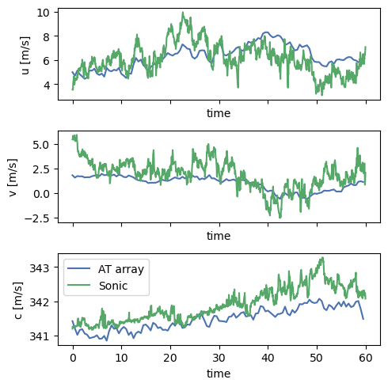

%load_ext autoreload
%autoreload 2
# hardware
import os
# analysis
import numpy as np
import xarray as xr
import pandas as pd
from scipy.integrate import simps
from scipy.interpolate import RegularGridInterpolator
# vis
import matplotlib.pyplot as plt
plt.style.use('seaborn-v0_8-deep')
# Acoustic tomography package
import atom
# configuration object
from hydra import initialize, compose
from hydra.utils import instantiate
with initialize(version_base=None, config_path="../../conf/"):
cfg = compose(config_name="configs",)
The atom.backgroundFlow module#
Bulk field estimation is done through the Background Flow module.
The first step in estimating the flow fields with atom is to find the linear system that describes the bulk flow, which is a spatial average considering the full array domain. The bulk flow estimates are used as an estimate of the the adevection velocity for covariance field calculations and fluctuating field estimates in subsequent steps.
Note
Future applications of AT target 3D flows in the ABL, so we need some mechanism to account for non-homogeneous temperature and velocity profiles. These will be developed in future installments to the atom.backgroundFlow module.
## Load data
### Array data
atarray = instantiate(cfg.atarray)
### Auxiliary data
auxdata = instantiate(cfg.auxdata)
auxDataPath = "/Users/nhamilt2/Documents/ATom/data/Data_collection_20190815/20190815123732_AcouTomAuxData.txt"
auxdata.loadData(auxDataPath)
### Constants
constants = instantiate(cfg.constants)
### TravelTimeExtractor
ttextractor = atom.signalProc.TravelTimeExtractor.from_netcdf('../extractedTravelTimes_example.nc')
Linear System object#
This object assembles linear system blocks to estimate the bulk flow within the acoustic tomography array.
It requires:
array geometry from the atArray object
(filtered) measured travel times from the travelTimeExtractor object
This class is responsible for assembling all the necessary information for the linear system solution as part of the AT process.
\(Gf = b\)
\(G\) is the geometry block (which can also include direct measurements).
\(f = [1/c_0, u_0/c_0^2, v0/c_0^2]\) is the vector of unknowns.
\(b\) are observed travel times from travelTimeExtractor
The background flow if found through the solution:
\(f = (G^{-1} * G)^T (G^{-1} * b)\)
\(G = [I, 3] (I==nMics*nSpeakers)\)
\(f = [3]\) (see above)
\(b = I\) (travel times for a frame)
ls = atom.backgroundFlow.linearsystem.LinearSystem(
atarray=atarray.ds,
measuredTravelTime=ttextractor.ds.filteredMeasuredTravelTimes,
constants=constants
)
ls.executeProcess()
# update pathID index to match the definition in the atarray object
ls.ds['pathID'] = atarray.ds.pathID
# store linearSystem dataset as netcdf file
ls.to_netcdf('../bulkField_example_data.nc')
The linearSystem.executeProcess executes all methods of the LinearSystem in order. This includes building the process block, collecting the observation block, solving the system, and extracting the bulk values.
linearSystem.buildProcessBlock()linearSystem.collectObservationBlock()linearSystem.solve()linearSystem.extractBulkValues()
ls.ds
<xarray.Dataset> Dimensions: (frame: 120, pathID: 56, variable: 3, component: 3) Coordinates:
frame (frame) int64 0 1 2 3 4 5 6 … 114 115 116 117 118 119
pathID (pathID) object MultiIndex
spk (pathID) int64 0 0 0 0 0 0 0 1 1 1 … 6 6 7 7 7 7 7 7 7
mic (pathID) int64 1 2 3 4 5 6 7 0 2 3 … 5 7 0 1 2 3 4 5 6
variable (variable) object ‘ones’ ‘ncos’ ‘nsin’
component (component) int64 0 1 2 Data variables: measuredTravelTime (frame, pathID) float64 0.09498 0.136 … 0.1961 0.1233 pathOrientation (pathID) float64 -0.3769 -0.9134 … -1.671 -1.935 pathLength (pathID) float64 32.52 46.28 76.65 … 86.81 67.15 41.81 arrayGeom (pathID, variable) float64 1.0 -0.9298 … 0.3562 0.9344 observationalData (pathID, frame) float64 0.002921 0.002921 … 0.002948 variableBlock (component, frame) float64 0.002929 … 9.648e-06 c (frame) float64 341.4 341.2 341.0 … 342.0 341.8 341.5 u (frame) float64 4.98 4.678 5.111 … 5.815 5.714 6.154 v (frame) float64 1.815 1.573 1.73 … 1.151 1.201 1.125 T (frame) float64 290.1 289.7 289.4 … 291.1 290.6 290.2
ls.ds['time'] = ls.ds['frame']*0.5
ls.ds = ls.ds.swap_dims({'frame':'time'})
auxdata.ds['time'] = auxdata.ds.time.values.astype(float)/10**9
fig, ax = plt.subplots(3,1, figsize=(5,5), sharex=True)
ls.ds.u.plot(ax=ax[0])
auxdata.ds.u.plot(ax=ax[0])
ls.ds.v.plot(ax=ax[1])
auxdata.ds.v.plot(ax=ax[1])
ls.ds.c.plot(ax=ax[2], label='AT array')
auxdata.ds.c.plot(ax=ax[2], label='Sonic')
ax[2].legend()
fig.tight_layout()
